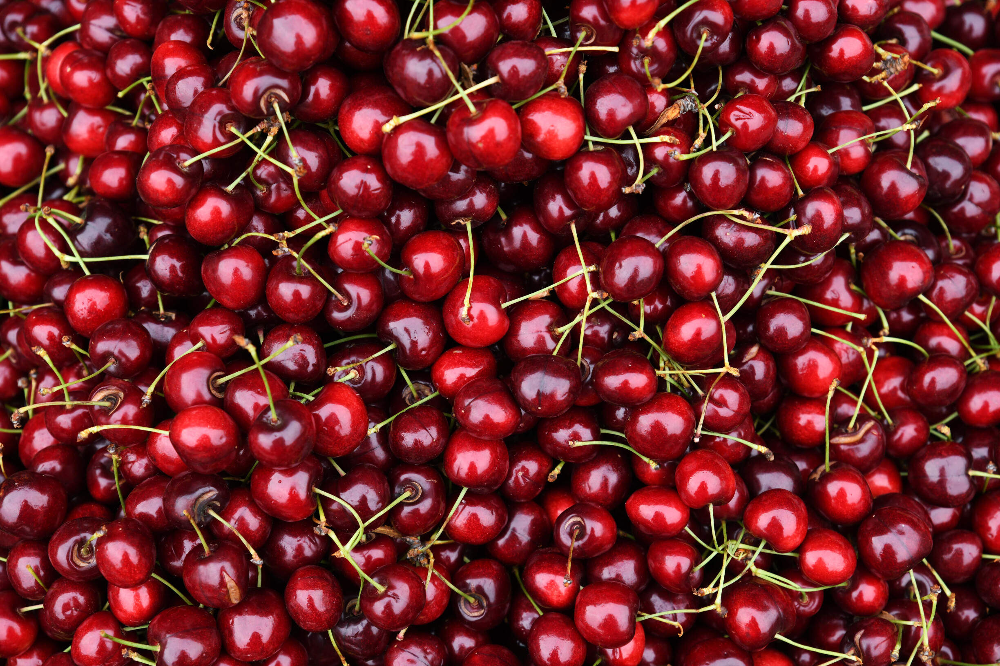

A cereja é um fruto pequeno e arredondado do gênero Prunus, com casca lisa, polpa suculenta e um caroço central. Sua coloração varia entre vermelho, amarelo e até tons mais escuros, dependendo da espécie. Pode ter sabor doce ou levemente ácido, sendo consumida tanto sozinha quanto em diversas receitas, além de ser bastante usada na decoração de sobremesas.

A cereja tem origem em regiões de clima temperado da Europa e da Ásia Ocidental, sendo cultivada há milhares de anos. Povos antigos, como gregos e romanos, já apreciavam a fruta e contribuíram para sua disseminação. Com o tempo, seu cultivo se expandiu para outros continentes, tornando-se popular em diversas partes do mundo.
A cerejeira se desenvolve melhor em regiões de clima frio, pois precisa de um período de baixas temperaturas para florescer adequadamente. O plantio geralmente ocorre durante o inverno, quando a planta está em dormência. Já a colheita acontece na primavera ou no início do verão, variando conforme a região e a variedade cultivada.
A floração da cerejeira ocorre no início da primavera e é um dos momentos mais marcantes do seu ciclo. As flores surgem antes das folhas, em tons de branco ou rosa, criando um visual muito característico. Esse processo depende da polinização, geralmente feita por insetos, sendo essencial para a formação dos frutos.
As principais espécies de cereja são a Prunus avium, conhecida como cereja-doce, e a Prunus cerasus, chamada de cereja-ácida. A primeira é mais consumida fresca devido ao sabor agradável, enquanto a segunda é mais utilizada na produção de geleias, doces e conservas. Cada espécie possui características próprias de sabor, tamanho e adaptação ao clima.
| Componente | Quantidade |
|---|---|
| Calorias | 66 kcal |
| Carboidratos totais | 16 g |
| Fibras | 2,1 g |
| Proteínas | 1,06 g |
| Gorduras | 0,2 g |
| Ácidos graxos | 140 mg |
| Potássio | 222 mg |
| Cálcio | 64 mg |
| Fósforo | 21 mg |
| Magnésio | 11 mg |
| Ferro | 360 µg |
| Vitamina A | 3 µg |
| Vitamina B1 | 30 µg |
| Vitamina B2 | 30 µg |
| Vitamina B3 | 150 µg |
| Vitamina B6 | 50 µg |
| Vitamina B9 | 4 µg |
| Vitamina C | 7 mg |
| Vitamina E | 70 µg |
O consumo de cereja pode trazer diversos benefícios à saúde, principalmente por sua ação antioxidante e anti-inflamatória. Ela ajuda a combater os radicais livres e pode auxiliar na recuperação muscular. Além disso, possui melatonina, substância que contribui para a regulação do sono e melhora da qualidade do descanso.
A torta de cereja é uma sobremesa tradicional, apreciada pelo equilíbrio entre o doce e o levemente ácido da fruta. Para o preparo, utiliza-se uma base de massa (caseira ou pronta), sobre a qual é colocado um recheio feito com cerejas, açúcar, suco de limão e amido de milho para dar consistência. Após o preparo do recheio, ele é disposto sobre a massa, podendo ser coberto com tiras decorativas. A torta deve ser assada até que a massa esteja dourada e o recheio consistente.
A geleia de cereja é uma preparação simples e versátil, ideal para acompanhar pães, torradas e sobremesas. Seu preparo consiste em cozinhar cerejas sem caroço com açúcar e suco de limão em fogo baixo, até que a mistura adquira uma textura espessa. Durante o processo, é importante mexer regularmente para evitar que grude no fundo. Ao final, a geleia pode ser armazenada em recipientes de vidro devidamente esterilizados.
A bebida de cereja é uma opção leve e refrescante, especialmente indicada para dias quentes. Para prepará-la, basta bater cerejas com água gelada, açúcar ou mel e gelo. A mistura pode ser coada para obter uma textura mais suave. Opcionalmente, pode-se adicionar suco de limão ou folhas de hortelã para intensificar o sabor. O resultado é uma bebida equilibrada, com sabor marcante e agradável.
https://pt.wikipedia.org/wiki/Cereja
https://www.tuasaude.com/beneficios-da-cereja/
https://www.tuasaude.com/beneficios-da-cereja/